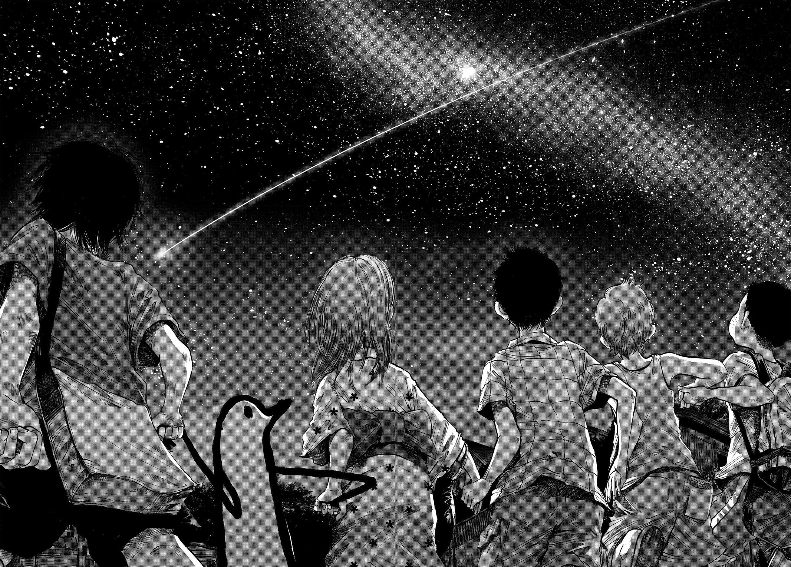

Oyasumi Punpun
Manga de Inio Asano, sobre la vida de Punpun desde que es un niño hasta su vida adulta.
Obras que he visto/leído
Manga de Inio Asano, sobre la vida de Punpun desde que es un niño hasta su vida adulta.
Obra maestra con todas las palabras, el mejor manga de la historia.
Una obra sobre las 2 supervivientes de un mundo postapocalíptico causado por una guerra en el año 3230. Recomendado también Shimeji Simulator, otro manga del mismo autor: Tsukumizu.
Un grupo de estudiantes descubre una hora oculta entre los días donde combaten criaturas llamadas Sombras usando el poder de sus Personas. A medida que enfrentan peligros que ponen en riesgo sus vidas, luchan por evitar el fin del mundo y encontrar sentido a la vida y la muerte. El juego trata temas como la soledad, el sacrificio, el paso del tiempo y la amistad, y para muchos, también la depresión. Sin dudas una obra maestra que ha hecho llorar a muchos (me incluyo).
Artistas que más escucho últimamente.
Cuarteto de Nos es una banda Uruguaya activa desde 1984, cuando el país seguía bajo una dictadura militar. Fundada originalmente por Roberto Musso, Riki Musso, Santiago Tavella y Guzmán Villamonte, siendo este el primero en salir de la banda, reemplazado por actualmente Álvaro Pintos, y Tavella siendo el miembro que más recientemente abandonó la banda en marzo de 2024 tras 40 años en ella para enforcarse en sus proyectos.
Banda estadounidense de rock que combina ciencia ficción, electrónica y rock alternativo. Sus letras suelen tocar temas como el futuro, la tecnología y las emociones humanas.
Algunas canciones o artistas favoritos.

Ending del DLC de Cyberpunk 2077 "Phantom Liberty". A pesar de no haber acabado la historia principal, he acabado el DLC, y a pesar de que la gente me ha criticado un poco por el final que he elegido en este, la historia sigue siendo muy buena en mi opinión, más junto a esta canción, una de las 3 que salen en los créditos. Quiero acabar en cuanto pueda la historia principal para ver cómo acaba todo.
Ending del volumen final del videojuego Blue Archive, una novela ligera la cual lees bajo el punto de vista de "Sensei", quien es el profesor de todas la estudiantes de una ciudad académica. Para mí, una de las mejores historias (si no la mejor) que he leído en mi vida, y junto a "The Promise at Sunset", de los mejores y más emocionales endings también.
Comida que he probado a lo largo de mi vida y me ha gustado.
Clásica receta española, me es indiferente si es con cebolla o sin, pero prefiero sin.
Comida típica del sudeste asiático, más conocido cuando se menciona Japón. Por lo que tengo entendido, cada país tiene su versión, y el que se muestra en la imagen, es de Vietnam.